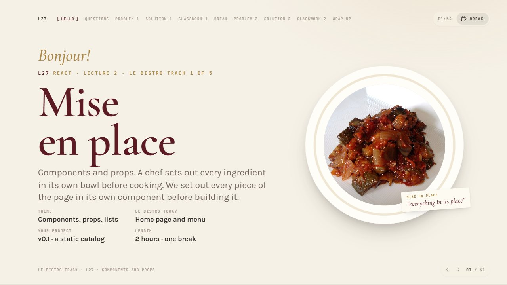
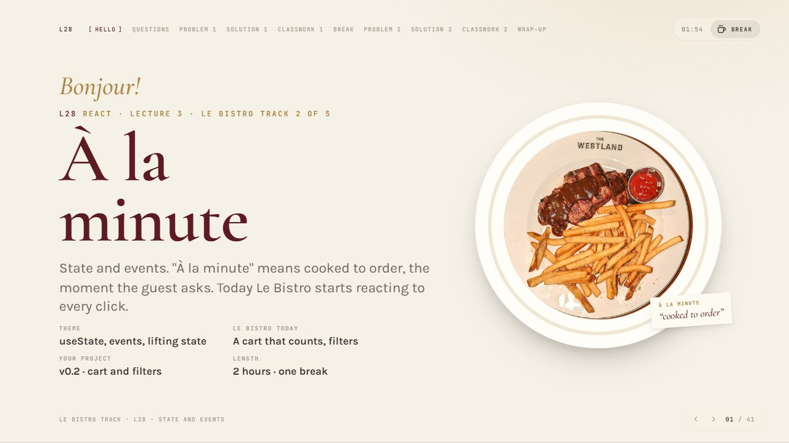
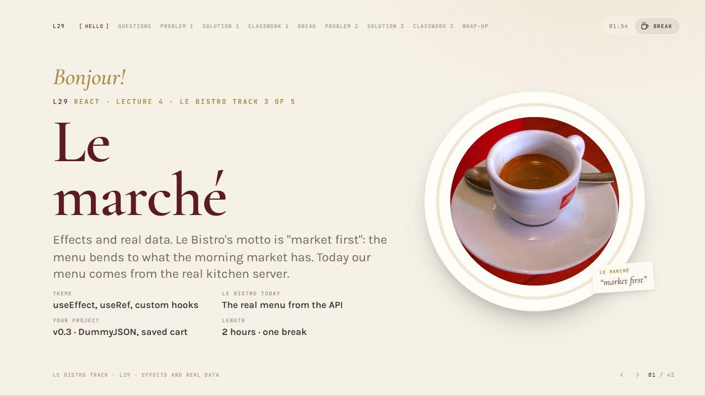
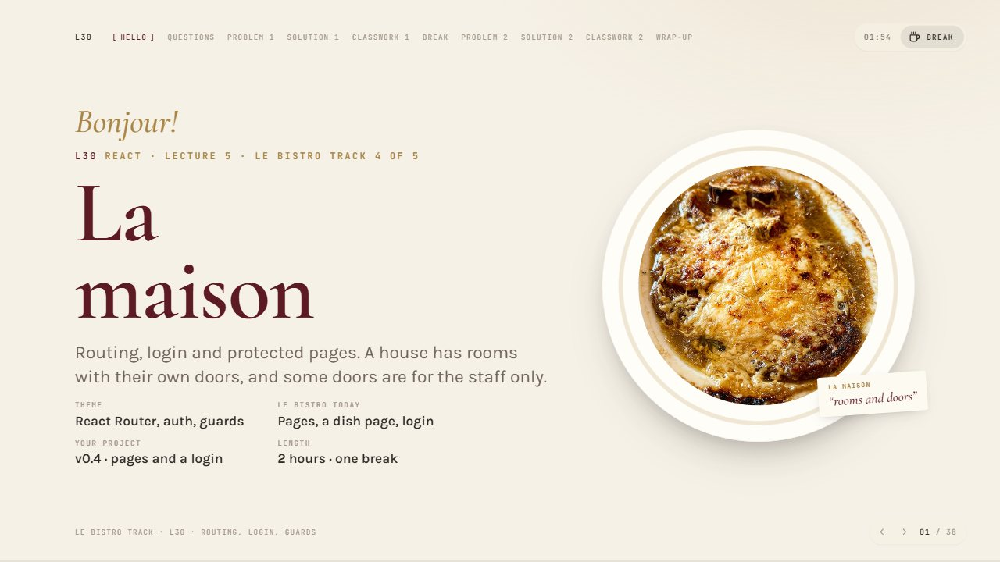
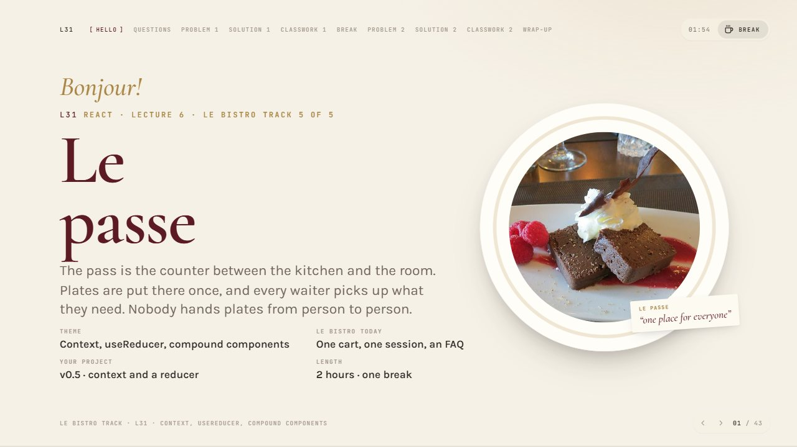

IT Step · React · syllabus v2 L27–L31
Five lectures from components to context, for lecturers who are new to React. The lecturer builds Le Bistro live; the students build their own shop. Open a deck, press F for fullscreen, N for notes and B for the coffee break.




